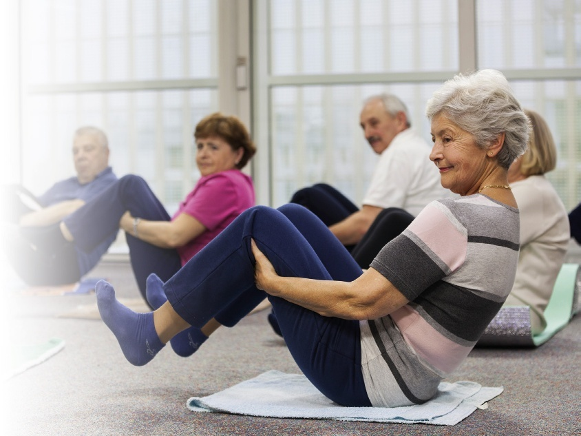
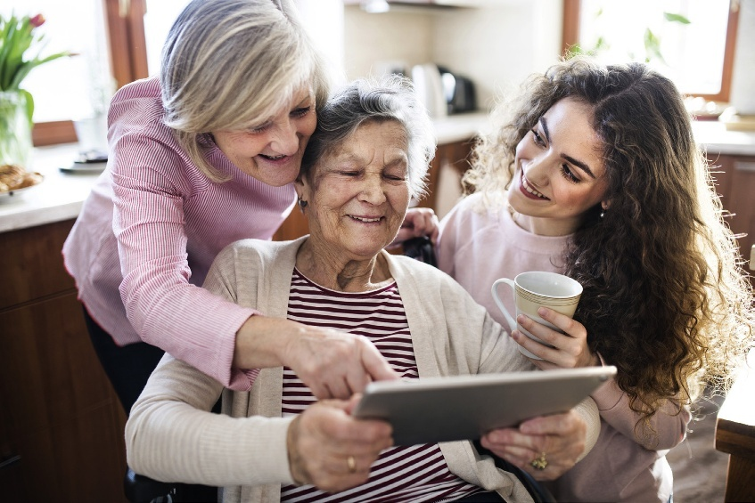
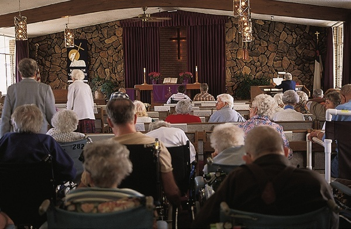
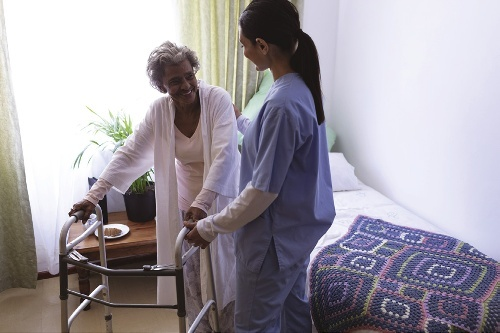

A support worker’s job is to help clients achieve or maintain optimal health. But what exactly is “optimal” health?
支持工作者崇高的职业天职，在于全力协助服务对象达成并维系其最高水准的最适健康（Optimal Health）。然而，究竟何为“最适健康”？

Sorrentino 原版教材第 6 章共收录 27 个核心全人健康与临床专业术语。支持实时模糊检索及「紧凑表格 / 记忆卡片」双模态自由切换。
| 英文术语 / 国际音标 | 中文对照 / 原书页码 | 教材标准学术释义与临床界定 |
|---|---|---|
| attitude /ˈætɪtjuːd/ |
健康态度 p. 85 |
A person’s beliefs, values, or opinions toward engaging in healthy behaviours.
个人对于参与有益健康行为所秉持的内在信念、价值取向或主观认知态度。
|
| cognitive health /ˈkɒɡnətɪv helθ/ |
认知健康 / 智力维度健康 p. 81 |
Well-being in the intellectual dimension, achieved through an active, creative mind.
在智力与思维维度的完好状态，通过一生中保持敏锐活跃、充满好奇心与创造力的头脑来实现。
|
| determinants of health /dɪˈtɜːmɪnənts ɒv helθ/ |
健康决定因素 p. 82 |
The most important factors—such as lifestyle, environment, human biology, and health services—that determine health status in an individual or a community.
决定个体或群体社区健康状况的最关键宏观因素，涵盖生活方式、生活环境、人类生物学遗传以及卫生医疗服务可及性。
|
| dimensions of health /daɪˈmenʃnz ɒv helθ/ |
健康维度 p. 79 |
All aspects of a person’s health—physical, emotional, social, spiritual, cognitive. Holistic health considers all of these aspects.
构成一个人健康的全部维度 —— 生理、情绪、社会、精神灵性与认知智力；全人健康理念统筹考量上述所有方面。
|
| disability /ˌdɪsəˈbɪləti/ |
残障 / 功能丧失 p. 87 |
The loss of physical or mental function.
机体躯体生理机能或心智精神功能的丧失与显著受限。
|
| discrimination /dɪˌskrɪmɪˈneɪʃn/ |
歧视 p. 92 |
The unfair treatment of people on the basis of such aspects as their physical characteristics, health history, or group membership.
基于个人的身体生理特征、既往健康病史或群体族群归属等因素，而对当事人实施的不公正、差异化排斥对待。
|
| emotional health /ɪˈməʊʃənl helθ/ |
情绪健康 p. 80 |
Well-being in the emotional dimension, achieved when people feel good about themselves.
情绪维度的完好状态；当人们拥有强大的自尊、自我接纳与自我调控能力，能良好适应环境时即可达成。
|
| environmental health /ɪnˌvaɪrənˈmentl helθ/ |
环境健康 p. 84 |
According to the World Health Organization, “all the physical, chemical, and biological factors external to a person and all the related factors impacting behaviours.”
依据世界卫生组织（WHO）界定：指“存在于人体外部的所有物理、化学和生物学因素，以及影响人类行为的一切相关环境因素”。
|
| equitable /ˈekwɪtəbl/ |
公平合理的 / 衡平的 p. 83 |
Fair, reasonable, and just.
符合公平、理性、公允与社会正义准则的。
|
| gender /ˈdʒendə(r)/ |
社会性别 p. 85 |
The roles, personality traits, attitudes, behaviours, values, and relative power and influence assigned to the sexes by society.
社会基于生理性别赋予不同性别的特定角色期待、性格特质、态度行为、价值观念以及相对权力与社会影响力。
|
| genetic endowment /dʒəˈnetɪk ɪnˈdaʊmənt/ |
遗传禀赋 / 基因遗传素质 p. 84 |
The genetic makeup that predisposes an individual to adopt certain behaviours that affect health status.
使个体在生理倾向或行为反应上易受特定影响、进而直接左右健康状况的先天基因组成。
|
| health /helθ/ |
健康 p. 79 |
A state of well-being in all dimensions of one’s life.
一个人生命所有维度均处于全面良好平衡与完好的动态状态。
|
| holism /ˈhəʊlɪzəm/ |
全人观 / 整体论 p. 79 |
A concept that considers the whole person; the whole person has physical, social, emotional, cognitive, and spiritual dimensions.
将服务对象视为一个完整统一生命的哲学理念；全人由生理、社会、情绪、认知及精神灵性五大密不可分的维度共同构成。
|
| holistic health /həʊˈlɪstɪk helθ/ |
全人健康 / 整体健康 p. 79 |
A state of well-being in all dimensions of one’s life.
个体生命在生理、心理、社会与灵性所有维度上共同达成的和谐完好状态。
|
| illness /ˈɪlnəs/ |
疾病 / 患病状态 p. 87 |
The loss of physical or mental health.
生理或心理健康状态的丧失，导致机体或心智功能受损。
|
| marginalize /ˈmɑːdʒɪnəlaɪz/ |
边缘化 p. 85 |
The act of excluding people who are not part of the majority culture.
将非主流文化群体或少数群体排斥在主流社会资源、话语权与公共服务之外的歧视性行为。
|
| optimal health /ˈɒptɪməl helθ/ |
最适健康 / 最佳健康状态 p. 85 |
State of achievable maximum well-being in each of the five dimensions: physical, emotional, social, cognitive, and spiritual.
在生理、情绪、社会、认知和精神灵性五大维度中各自达到的最大可实现之完好平衡状态。
|
| personal empowerment /ˈpɜːsənl ɪmˈpaʊəmənt/ |
个人赋权 / 自我赋能 p. 87 |
Understanding and accepting that you can make your own healthy lifestyle choices, free from the influences of others.
深刻理解并欣然接纳自己拥有摆脱他人不良裹挟、独立做出属于自己的健康生活方式抉择的自主掌控力。
|
| physical health /ˈfɪzɪkl helθ/ |
身体健康 / 生理维度健康 p. 79 |
Well-being in the physical dimension, achieved when the body is strong, fit, and free from disease.
在身体生理维度的完好状态；当机体强健、适应力强且免于疾病侵袭时即可实现。
|
| primary prevention strategies /ˈpraɪməri prɪˈvenʃn ˈstrætədʒiz/ |
一级预防策略 p. 87 |
Strategies that are aimed at preventing a disease or illness by reducing its risk factors.
旨在通过主动减少或消除致病危险诱因，从源头上阻止疾病或损伤发生的健康干预策略（如接种疫苗、健康饮食）。
|
| prognosis /prɒɡˈnəʊsɪs/ |
预后 p. 88 |
The expected course of recovery, which may range from full recovery to death, based on the usual outcome of the illness.
基于该疾病常规临床规律与转归趋势，对患者康复演进历程所作出的专业医学预测（可从完全康复至临终死亡）。
|
| psychosocial health /ˌsaɪkəʊˈsəʊʃl helθ/ |
心理社会健康 p. 79 |
Well-being in the social, emotional, intellectual, and spiritual dimensions of one’s life.
在个人生命的社会互动、情绪体验、智力思维与精神灵性四大维度的综合完好状态。
|
| social health /ˈsəʊʃl helθ/ |
社会健康 p. 80 |
Well-being in the social dimension, achieved when people have stable and satisfying relationships.
在社会人际维度的完好状态；当人们拥有稳固、温暖且令人满意的人际与社群联系时达成。
|
| social support system /ˈsəʊʃl səˈpɔːt ˈsɪstəm/ |
社会支持系统 p. 80 |
An informal group of people who help each other or others outside the group.
由家庭成员、挚友、邻里或互助群体组成的非正式社会网络，成员彼此关爱扶持并为遇到困难的人提供生活与情感支援。
|
| spiritual health /ˈspɪrɪtʃuəl helθ/ |
精神灵性健康 p. 80 |
Well-being in the spiritual dimension achieved through the belief in a purpose greater than the self.
在精神灵性维度的完好状态；通过确信存在超越小我利益的高尚生命意义与追求、心怀仁爱谦逊与宽恕来实现。
|
| stigma /ˈstɪɡmə/ |
社会羞辱 / 污名印记 p. 91 |
Social shame associated with a particular circumstance, quality, or person that causes one to feel shame or embarrassment—for example, the stigma of being fired from a job.
与特定病态境遇、身体缺陷、精神障碍或特定人群相关联的社会性耻辱标签，导致当事人遭受孤立、羞辱或自惭形秽。
|
| wellness /ˈwelnəs/ |
身心完好安康 / 整体健康境界 p. 85 |
The achievement of the best health possible in all dimensions of one’s life.
一个人在生理、情绪、社会、认知和精神灵性所有维度上所达成的最高水准之完好状态。
|
A support worker’s job is to help clients achieve or maintain optimal health. But what exactly is “optimal” health?
支持工作者崇高的职业天职，在于全力协助服务对象达成并维系其最高水准的最适健康（Optimal Health）。然而，究竟何为“最适健康”？
This chapter examines the concepts and experiences of health and wellness as well as illness and disability and will also explain what optimal health is. A support worker providing supporting care to a client who lives with an illness or disability might be tempted to focus on the medical condition rather than on the whole person.
本章将深度剖析健康与安康、疾病与残障的深层科学内涵与真实生命体验，并系统阐释最适健康的实践路径。在日常照护身患重病或严重残障的案主时，支持工作者往往容易陷入仅关注其病理指标或受损器官的狭隘误区，而忽视了活生生的“完整全人”（Whole Person）。
However, by trying to understand what the person may be experiencing, support workers can provide better, more compassionate care and support. The 27 key terms outlined below reflect the authentic holistic health and clinical definitions established in Chapter 6 of the textbook.
唯有设身处地去深层共情案主所经受的身心剧痛与生活重压，支持工作者方能提供更为卓越、充满同理心与人道关怀的高品质照料。 原版教材第 78 页系统收录了 27 个核心专业术语，为理解全人健康五大维度、宏观社会健康决定因素以及抵制社会羞辱与歧视奠定了坚实的理论基石。
All caregivers need to understand how health practices, lifestyle, and social status can influence a person’s health. As a support worker, you must focus your care and support on improving (or maximizing) a person’s health potential, whatever that potential may be.
所有从事照料支持的专业人员，均必须深刻洞察健康习惯、生活方式以及社会经济地位如何深刻塑造一个人的健康轨迹。作为一名支持工作者，你的照护重心必须坚定不移地聚焦于激发、提升并最大化释放案主潜在的健康潜能 —— 无论这种潜能目前因疾病受到何种程度的局限！
The definition of the term health has changed over the years. At the end of the 1800s, health was defined by what it was not: Health was the state of not being sick.
回溯漫长的医学发展史，“健康”这一概念的内涵经历了一场颠覆性的认知跃迁。在 19 世纪末期（1800 年代），人们对健康的界定完全建立在一种消极的否定性框架之上：健康就是“没有生病的状态”。
At that time, the leading causes of death were diseases that spread from one person to another. Pneumonia, tuberculosis, and influenza, for example, were frequent killers. Anyone lucky enough to avoid being infected during an outbreak was considered healthy.
在那个抗生素尚未问世的年代，肆虐人际的恶性烈性传染病是剥夺人类寿命的主要杀手。例如肺炎、肺结核与流行性感冒，常常在瞬息之间夺走成千上万条生命。在当时，任何侥幸在传染病大爆发中幸免于难、未曾染病的人，便被理所当然地视作“健康者”。
During the first half of the twentieth century, vaccinations, antibiotics, health education, and cleaner living conditions reduced the spread of diseases. People were living longer and getting sick less often. But were they healthy?
步入 20 世纪上半叶，随着疫苗免疫接种的普及、抗生素的问世、公共卫生知识的宣教以及城市居住卫生环境的大幅改善，烈性传染病的蔓延得到了有效遏制。人类的预期寿命显著延长，急性传染性患病率急剧下降。然而，摆脱了传染病纠缠的人们，就真的算是健康了吗？
During the latter part of the twentieth century, people started to realize that health is more than just the absence of disease. As they recognized that health is affected by factors such as lifestyle and environment, discussions of health began to focus more on the person rather than on the absence or presence of disease. A whole person has physical, emotional, social, cognitive, and spiritual dimensions.
在 20 世纪后半叶，现代医学与人文学界开始深刻意识到：真正的健康决不仅仅意味着机体没有器质性病变。随着人们日益体察到个体的生活方式、日常习惯与生存环境对生命质量的深远塑造，关于健康的探讨重心开始由冰冷的“疾病病理存在与否”全面转向生动饱满的“人本身”。一个完整的生命全人由生理（身体）、情绪（心理）、社会（人际）、认知（智力）以及精神（灵性）五大维度有机交织而成。
Psychosocial health is well-being in the social, emotional, intellectual, and spiritual dimensions of one’s life. A holistic approach to health care takes into account a client’s psychosocial well-being and health as well as their physical health. Few people enjoy perfect psychosocial health throughout their lives. Holism focuses on all these dimensions of health.
心理社会健康（Psychosocial Health）是指个体在社会交往、情绪体验、智力思维与精神追求四大维度的综合完好状态。全人照护途径（Holistic Approach）坚决主张：临床支持工作不仅必须照料案主的身体躯体生理需求，更必须全方位关照其心理社会完好状态！在现实生活中，极少有人能在整个人生历程中始终维持十全十美的心理社会健康。 全人观（Holism）的核心哲学，在于将目光聚焦于上述所有生命维度的协同联动。每一个维度均与其余维度休戚与共、深度依附。
Each dimension relates to and depends on the others. Current views on health give importance to holistic health—a state of well-being in all dimensions of one’s life (FIGURE 6.1). Providing holistic health care means caring for all dimensions of the person, not just the physical aspect. A widely accepted definition of health is that of the World Health Organization (WHO): “Health is a state of complete physical, mental, and social well-being and not merely the absence of disease or infirmity.” In more recent years, the WHO has also recognized that health includes the ability to lead a “socially and economically productive life.”
当代主流医学与护理学界高度推崇全人健康（Holistic Health）理念 —— 即在人生的所有维度上均维持充满活力的完好安康状态（见图 6.1）。提供全人照料服务，意味着必须将服务对象作为一个不可分割的生命统一体予以悉心呵护，而绝不能蜕变为单单处理身体皮肉病痛的机械工匠！ 全球公认最具权威的经典健康定义，由世界卫生组织（WHO）庄严确立：“健康乃是一种在身体生理、心理精神以及社会适应上的完满状态，而绝非仅仅是没有疾病或不虚弱。”在近年来的发展中，世界卫生组织进一步深化了该内涵，强调健康还必须涵盖个体具备过上“在社会与经济层面富有生产力与创造性生活”的主体能力。

The five dimensions of health—physical, emotional, social, spiritual, and cognitive—all must be considered in a discussion of whole health. These elements are discussed below.
在探讨全人生命的整体健康时，必须将生理、情绪、社会、精神灵性以及智力认知这五大核心要素纳入统筹考量。以下逐项展开深层论述。
Influenced by genetics and lifestyle, physical health is achieved when the body is strong, fit, and free from disease. The following factors contribute to the physical health of all people, including caregivers: • Following a nutritious diet according to Canada’s Dietary Guidelines (see Chapter 27) • Exercising regularly • Living in a smoke-free environment • Drinking alcohol moderately or not at all • Having a good night’s sleep
身体生理健康深受先天遗传基因与后天生活方式的双重塑造；当机体强健有力、适应力佳且免于器质性疾病侵袭时，即达成了良好的生理健康。下列关键健康行为不仅对广大服务对象的生理机能至关重要，更是每位一线照护人员维系职业耐受力的生命防线： • 严格遵循《加拿大国家膳食指南》摄取全面均衡营养（详见第 27 章） • 保持常态化规律规律体育锻炼 • 生活在远离二手烟与烟草烟雾的无烟清洁环境中 • 严格克制酒精摄入（做到极度适量或终身戒酒） • 保持规律且高质量的夜间充足睡眠
• Maintaining optimal body weight according to body mass index • Following safety practices, such as using seat belts and wearing bike helmets • Seeking medical attention when needed Support workers have an important role in maintaining clients’ physical health. For instance, they help ensure a clean, safe, and comfortable environment; may prepare nutritious meals; and may assist clients with physical activity.
• 参照身体质量指数（BMI）将体重视图维持在最适健康区间 • 严格恪守人身日常安全防范规范（如乘车系紧安全带、骑车佩戴防撞头盔） • 身体出现不适或异常警示指征时及时寻求专业医疗救治 一线支持工作者在维系案主身体生理健康中扮演着举足轻重的基石角色。例如，照护人员亲手协助打造清洁、安全、防跌且温馨舒适的居所环境；遵照医嘱与营养师指引精心烹制营养膳食；并悉心鼓励和搀扶案主展开力所能及的躯体功能锻炼与日常活动。
Emotional health is not merely the absence of negative emotions but the ability to function well in and adapt appropriately to circumstances, whatever they may be. When people feel good about themselves, they are emotionally healthy. They have strong self-esteem, self-control, and self-awareness. They are able to give and receive from others without worrying about being hurt or rejected.
情绪健康绝非仅仅意味着一个人头脑中没有负面消极情绪，而是指个体无论身处何种顺境或逆境，均能保持良好的心理社会功能并做出恰当心理调适的能力。当一个人对自己拥有发自内心的自我认可与接纳时，便拥有了健全的情绪健康。他们具备强大的自尊自信、优秀的自我克制力（Self-Control）以及清晰清醒的自知力。
In contrast, emotionally unhealthy people may be depressed or have intense feelings of insecurity. When upset, they may feel overwhelmed and become aggressive. Emotional health varies throughout one’s life. For example, Mr. Szabo was a confident and happy person and enjoyed many social relationships.
他们能够坦然向他人倾注关爱，亦能大方接纳他人的善意，而绝不会终日惶恐于遭受伤害或被拒斥。反之，情绪健康匮乏的人往往长期陷入抑郁泥潭或深感强烈的不安全感；面对逆境挫折时，他们极易被负面情绪彻底压垮并表现出冲动的攻击性言行。 在人生的不同发展阶段，个体的心理情绪健康水平并非恒定不变，而是充满动态起伏。
However, at the age of 60, a series of tragedies—the death of his wife and the loss of his business—caused him to become depressed and lose his self-esteem. He felt unable to control his life. With the help of a counsellor and his family, Mr. Szabo regained his emotional health. Support workers often care for clients who are experiencing emotional health challenges due to illness, disability, or loss.
例如，萨博（Szabo）先生早年是一位充满自信、性格开朗且拥有广泛社交人脉的成功人士。然而在他 60 岁那年，厄运接踵而至 —— 结发妻子的猝然离世与毕生经营企业的破产倒闭，击垮了他的心理防线，使他陷入重度抑郁并彻底丧失了自尊，整日觉得人生彻底失控。所幸在专业心理咨询师的疏导与家庭亲友的温情关照下，萨博先生逐步走出了阴霾，重获情绪健康。在床旁日常工作中，支持工作者经常照护那些由于遭受重度躯体疾病、突发残障或痛失至亲而深陷情绪危机与心理绝境的脆弱案主。
Social health is achieved through stable and satisfying relationships. People with strong social health treat others with respect, warmth, and openness. They like and trust others. People with poor social health may show little regard for others and may use others for their own gain. Few people enjoy strong social health all through life. Feelings of isolation and loneliness are common among older persons and people who have lost their partners, friends, or other social relationships.
社会人际健康是通过建立并维系稳固、温暖且令人满意的人际联结来实现的。拥有卓越社会健康的人，能够以由衷的敬意、真挚的温暖与坦诚豁达的胸怀对待身旁的每一个人。他们由衷地喜爱他人并对他人抱以充分信赖。反之，社会健康低下的人往往对他人的身心痛苦漠不关心，甚至习惯于将身边人视作满足个人自私私利的工具。 在漫漫人生长河中，极少有人能够终身享有一帆风顺的强健人际网络。
New immigrants are also at risk for poor social health. Being in an unfamiliar place and not speaking the local language can be very socially isolating. Most people have friends and acquaintances who help them meet their needs. These needs may be practical, such as a ride to work. Others may be deeper, such as the need for: • Companionship and a feeling of belonging • Comfort, emotional support, and encouragement • Reassurance of one’s self-worth • Help, guidance, and advice A social support system is an informal group of people who help each other or others outside the group. Research has shown that social support systems help improve overall health.
在步入暮年的高龄长者、以及那些丧失生活伴侣、挚友故去或原有社交网络断裂的人群中，深刻的孤立无援感与挥之不去的孤独感极其普遍。初来乍到的新移民同样是面临社会健康严重滑坡的高危群体：身处语言不通、文化迥异的陌生地带，往往陷入极其令人窒息的社会隔绝困境。 绝大多数人均拥有能够协助满足其身心需求的亲友与相识伙伴。这种人际支持需求有些属于日常务实层面的求助（如搭车通勤）；而更多的则是人类心灵深处的刚性精神渴望，例如： • 真诚长久的陪伴与强烈的社群归属感 • 逆境中的心灵慰藉、情感支持与坚定鼓励 • 对自身生命价值与存在自尊的肯定与确证 • 面对困境时的真挚相助、专业指引与理性建言 社会支持系统（Social Support System）是由家庭亲友、知己故交与热心邻里共同编织的非正式人际互助网络，成员彼此关爱扶持并为遇到困难的人施以援手。现代医学与社会学研究反复证实：强大的社会支持系统能直接增强机体免疫机能并显著提高整体健康水平！
Indeed, social support may be as important to wellness as a nutritious diet, a smoke-free environment, and regular exercise. Social support systems can provide food, housing, financial aid, and emotional support during crises. They can make it possible for ill and frail people to continue to stay in their homes rather than move to a live-in facility (FIGURE 6.2). Social supports may also help people living with dementia stay in their homes longer. Support workers may be key members of a client’s social support system. As a support worker, you provide practical support, such as help with activities of daily living (ADLs) and home management, and emotional support by practising compassionate care.
事实上，社会人际支持对延年益寿与安康的重要性，丝毫不亚于科学均衡的饮食、无烟环境与规律锻炼！在生命危机降临时，社会支持系统能够提供食物、避风住所、紧急经济救济以及无可替代的情感支柱。正因有了强大的人际支持网络，许多身患重疾或身体衰弱的高龄长者才得以继续在自己熟悉的家中安度晚年，而免于过早被迫入住全封闭养老照护设施（见图 6.2）。社会支持甚至能极大延缓认知症（阿尔茨海默病）长者被迫离家的时间。在临床一线，支持工作者本人往往正是案主最核心的社会支持系统支柱之一：作为专业人员，你不仅在日常起居活动（ADLs）与居家打理上提供专业实务照料，更通过发自内心的同理关怀与长情陪伴，为案主注入了无穷的心灵温暖。
Spiritual health is achieved through belief in a purpose greater than the self. It may or may not involve being a member of a formal religion or even believing in a higher being.
精神灵性健康是通过对超越狭隘小我利益的高尚生命意义与崇高使命的确信来实现的。灵性健康可以表现为信仰某种传统正统宗教，亦可完全脱离宗教仪式或神明观念而存在。
People who are spiritually healthy tend to have a clear understanding of what they believe to be right and wrong, and their behaviours often reflect their beliefs. They feel their life has meaning. They are generally more concerned about personal fulfillment than about material things.
拥有高度灵性健康的人，通常对是非善恶拥有极其清晰而崇高的道德认知准则，其日常一言一行皆是其内在信仰的自然投射。他们由衷地感到自己的生命充满崇高意义与存在价值；相较于对物质财富的贪婪追逐，他们更加专注于追求精神境界的充盈圆满与灵魂升华。
Compassion, honesty, humility, forgiveness, and charity are elements of spiritual health. For some people, spiritual health is closely linked to religion. Being able to attend regular religious services may be very important for their spiritual health.
深沉的慈悲心、崇高的诚实正直、发自内心的谦卑逊逊让、博大的宽恕包容以及无私的慈善博爱，皆是精神灵性健康不可或缺的核心品格。 对于诸多群体而言，灵性健康与特定宗教信仰密不可分。能够按时参加规律的宗教崇拜仪式与礼拜祈祷，往往是其维系晚年生命意志与灵性健康的生命线。
Support workers must respect clients’ expressions of their spirituality. If you work in a live-in facility, you may be responsible for transporting clients to religious services conducted within the building (FIGURE 6.3). Make sure you are not late for this task.
一线支持工作者必须以最高的崇敬之心，包容并尊重服务对象在精神信仰上的各种个性化表达。若你在常住型照护机构工作，你可能需要负责用轮椅护送长者前往机构内设的礼拜堂参加宗教活动（见图 6.3）。在执行此类护送时切忌迟到拖延，以免打乱长者的虔诚心境。
In a private home, you may see symbols of the person’s faith, such as religious icons, displayed in many areas of the house. Always handle these items with respect. People of different cultures may express their spirituality in unique ways (see the Respecting Diversity: Diversity, Health, and Spirituality box).
在私人居家上门照护中，你会在居室各个角落看到十字架、佛龛或圣像等承载主人深厚信仰的圣物；在日常清扫与床旁照料时，必须轻拿轻放、怀揣绝对敬意，严禁擅自挪动或轻浮评判！不同文化族裔背景的案主表达灵性信仰的方式各具特色（详见“尊重多元文化：多元族群、健康与灵性”专题专栏）。
Cognitive health is achieved by keeping the mind active and creative throughout life. Recall the last time you talked with a child. You may have marvelled at the curiosity the child showed as they asked you endless questions.
认知智力健康是通过一生中始终保持大脑思维的敏锐活跃与丰富创造力来实现的。回想一下你上一次与天真烂漫的幼童促膝交谈的情景：孩子那双忽闪的大眼睛里满是对大千世界的好奇，连珠炮般抛出无穷无尽的问题，常令人由衷赞叹。
Cognitively healthy people maintain this curiosity throughout life. They are interested in what is going on around them. They analyze, reason, and solve problems. They are open-minded and eager to learn.
具备良好认知健康的人，能够将这种宝贵的好奇心与求知欲终身葆有！他们对身旁发生的一切时代变迁充满探究兴致，乐于主动分析推理、破解生活难题，胸怀开阔豁达且终生渴望汲取新知。 反之，面临认知功能衰退与思维障碍挑战的人，往往会本能地退缩回避参与社区文娱活动与天下时事，甚至刻意自我封闭、切断与亲友的生活互动。
People with cognitive health challenges may try to avoid participating in community and world events and avoid being involved in the lives of others. They may be embarrassed by their loss of ability to think, reason, or communicate as they once did or may suddenly find themselves confused by world events. They often suffer from poor overall health as well. It should be stressed
他们常常为自己无法再像往昔那样敏捷思索、严密推理或自如交流而深感难堪自卑，面对日新月异的现代世界常陷入深深的困惑与无所适从。这种智力认知维度的损伤，往往直接恶化其整体身心健康转归。然而需要特别警醒的是：
that most people with cognitive health challenges experience these changes not as a result of their lifestyle but rather as a result of their declining overall health. Many live-in facilities have recreational programs and activities that promote cognitive and social health.
绝大多数面临认知障碍挑战的长者之所以经历这种残酷的心智滑坡，绝非源于其个人生活方式的放任或主观过错，而是机体整体神经退行性病变与全身生理健康衰退所诱发的无可奈何的生理病理改变！ 许多常住型照护机构精心设计了旨在促进长者认知思维与人际社交健康的丰富文娱康乐日程。
Residents are encouraged to take part in games and outings that are organized for them. They are encouraged to continue to be intellectually active even when they are in their rooms.
工作人员悉心鼓励住客积极参与益智棋牌、趣味竞猜以及户外郊游踏青活动；即便长者独处居室内部，亦全力支持其维系头脑活跃。
Activities such as reading, doing crossword puzzles, keeping indoor plants, doing crafts, and knitting challenge the mind and keep it active. As a support worker, you can promote your clients’ cognitive health by encouraging them to perform such activities and by talking with them about community and world events (FIGURE 6.4).
诸如静心阅读书报、做填字游戏、莳花弄草打理室内绿植、做手工折纸与针织编织等活动，均能有效激活脑细胞神经回路，保持思维生机。作为一名专业支持工作者，你不仅应当积极赋能鼓励案主参与此类益智活动，更应当在床旁照料时耐心陪伴他们探讨家常琐事与天下要闻，在倾听交谈中守护长者的敏锐心智（见图 6.4）。


Canada is one of the healthiest countries in the world. However, some Canadians are healthier than others and have more opportunities to lead a healthy life. The social determinants of health can have an important influence on health. For example, Canadians with higher incomes are often healthier than those with lower incomes.
加拿大是当今全球公认最健康的宜居国家之一。然而不可否认的是，在加拿大公民内部，一部分群体远比另一部分群体享有更为卓越的身体素质，并拥有更多过上健康生活的优质资源。宏观层面的健康社会决定因素对国民健康轨迹施加着决定性的巨大影响。例如，高收入阶层的加拿大人通常比低收入阶层群体享有显著更长的预期寿命与更低的患病率。
Differences in the health status of individuals and groups are called health inequalities. These differences can be due to a person’s genes and the choices they make (for example, whether they exercise or drink alcohol). A person might follow good holistic health practices and encourage everyone in the family to do so as well, but may still become very ill if they get a genetic (inherited) health condition. Similarly, in spite of holistic health practices, people (or even an entire community) could become very ill if they live close to a toxic waste dump or live several hundred kilometres away from the closest hospital and are unable to access health care when they need it.
在流行病学与公共卫生学中，不同个体与社会族群之间存在的健康状态差距被定义为健康不平等（Health Inequalities）。这种健康鸿沟部分归因于个体的先天基因差异以及后天自主选择的生活方式（例如是否坚持规律体育锻炼、是否酗酒）。一个人即便严苛恪守全人健康的良好行为规范，并带动全家老小共同践行健康作息，仍有可能因不幸继承了某种严重先天性单基因遗传缺陷而罹患恶疾。同理，哪怕一个人在日常生活中再自律，如果其居所紧邻有毒工业化学废料填埋场，或者定居在距最近综合性医院长达数百公里的偏远极寒荒野而在突发重疾时根本无法及时就医，个人再完美的健康自律也无法抵御环境致病的毁灭性打击！
In Canada, we know that achieving individual health is an important part of a community’s health. To ensure the health of all Canadians, we need to improve not only the quality of health care that is available to Canadians but also their living conditions. Realizing that health may be influenced by factors beyond a person’s immediate control, Health Canada has tried to identify those factors and to focus its efforts on addressing them. These factors are known as the social determinants of health. Canada’s version
在加拿大公共治理中，保障每一位公民的个体健康构成了筑牢整体社会群体健康的基石。为了确保全体国民享有平等的健康权利，我们不仅必须持续提升医疗卫生技术服务的可及品质，更必须从根本上大力改善国民赖以生存的社会物理生活环境！加拿大卫生部（Health Canada）深刻清醒地意识到：决定人类健康命运的关键力量，往往深植于那些超出个体即时主观意志掌控之外的宏观社会结构之中。为此，国家卫生部门系统厘清了这套核心宏观驱动力，并在宏观政策上集中攻坚 —— 这就是著名的健康社会决定因素（Social Determinants of Health）。加拿大官方版本的健康决定因素体系，
of these social determinants is slightly different from the WHO’s version (BOX 6.1). The 12 identified social determinants of health focus on the “bigger picture” of the broad range of personal, social, economic and environmental factors that have an impact on individual and population health (see the Case Study: Jason and His Determinants of Health box). Although each of these factors is important in its own right, it is their interrelationship that is of particular importance. The 12 key determinants of health in Canada are described below. 1. Income and social status. Health status improves as you go up the ladder of income and social standing. High income determines living conditions, such as safe housing, and the ability to buy sufficient, nutritious food.
略微不同于世界卫生组织的分类标准（详见专栏 6.1）。被正式确立的 12 项健康社会决定因素，将宏观战略视野牢牢锁定在深刻左右个体与全人类群体健康的个人、社会、经济与环境综合网络之上（详见案例专栏：杰森与影响其健康的决定因素）。尽管每一项因素独立审视皆至关重要，然而它们之间休戚与共、深度咬合的交互共生关系，才真正具有压倒一切的深远公共卫生意义。 加拿大官方确立的 12 项关键健康决定因素详述如下： 1. 经济收入与社会阶层（Income and social status）：国民的健康水平随着个人收入与社会阶层天梯的攀升而呈显著正向递增！丰厚的经济收入直接决定了安全达标的宜居住房条件，以及为全家采购充足高品质营养膳食的购买力。
The healthiest populations are those in societies that are prosperous and have an equitable distribution of wealth. 2. Social support networks. Support from families, friends, and communities is associated with better health. Such social support networks can be very important in helping people deal with and solve problems as well as in maintaining a sense of control over the circumstances of their life. The caring and respect that occur in social relationships result in a sense of satisfaction and well-being and seem to provide protection against health problems. 3. Education and literacy.
全球最健康的群体，永远诞生在那些经济高度繁荣、且全社会财富分配相对公允平等的文明国度之中。 2. 社会支持网络（Social support networks）：源自家庭挚亲、密友社群与基层社区的温情支持，与卓越的健康指标密切相关。强大的社会支持网络在赋能个体从容应对逆境、破解生活难题、以及在严峻生活变故中牢牢维系自我掌控感方面，发挥着无可替代的中流砥柱作用。在健康人际互动中孕育的关爱与敬重，能转化为莫大的心理满足感与幸福体验，甚至在生理机能层面构筑起抵御器质性疾病侵袭的坚固生物护盾。 3. 受教育水平与文化读写素养（Education and literacy）：人群的健康状况随其受教育年限的增长而显著改善。教育素养与个体的社会经济地位息息相关；
Health status improves with level of education. Education is closely connected to socioeconomic status; effective education for children and lifelong learning for adults are key contributors to the health and prosperity of not only individuals but also the country as a whole. Education contributes to health and prosperity by equipping people with knowledge and skills for problem solving, and helps provide a sense of control and mastery over life circumstances. It increases opportunities for job and income security and job satisfaction, and improves people’s ability to access and understand information to keep them healthy. 4. Employment and working conditions. Unemployment, underemployment, stressful work, or unsafe work are associated with poorer health. People
对儿童实施优质的基础通识教育、并为成年人铺设终身学习的发展轨道，不仅是公民个体身心健康与事业繁荣的生命基石，更是铸就整个国家长治久安的核心竞争力！教育不仅赋予人们独立思考与破解复杂难题的知识技能，更能极大稳固个体掌控自身命运的从容自决感。受教育程度直接拓宽了高薪稳定就业的通道，并极大增强了公众主动检索、科学甄别并有效吸收医学健康资讯的健康素养。 4. 职业就业与工作作业环境（Employment and working conditions）：长久失业、不充分就业（打零工）、高强度精神高压工作、或充斥物理危险的恶劣作业场所，均与极差的机体健康水平高度绑定。那些
who have more control over their work circumstances and fewer stress-causing demands in their jobs are healthier and often live longer than those in more stressful or riskier jobs and activities. 5. Social supports. The importance of social support extends to the broader community. The strength of social networks within a community, region, province or territory, or country is reflected in the institutions, organizations, and practices that people create to share resources and build attachments with others. 6. Physical environments. All aspects of the physical environment (both natural and human-made) directly affect our environmental health.
对自身职场工作节奏享有较高自主调控权、且岗位高压超载要求较少的劳动者，其身体健康指标显著占优，其平均预期寿命往往明显长于那些长期从事高危、极度紧绷或受制于人的劳动群体。 5. 宏观社会环境与支持网络（Social supports）：人际支持的深远价值由家庭延伸至整个广阔社区。一个社区、行政地区、省份乃至整个国家内部社会凝聚力与互助网络的强弱，深刻体现在公众自发构建旨在共享社会资源、维系邻里情感纽带的公共机构、民间公益组织与制度性关怀网络之中。 6. 物理生存环境（Physical environments）：人类赖以生存的全部物理环境（涵盖大自然天然生态与人造人工建筑环境）直接决定了我们的环境健康（Environmental Health）。世卫组织（WHO）将环境健康严格界定为：“存在于人体外部的所有物理、化学和生物学因素，以及左右人类行为的一切相关环境诱因。
The WHO defines environmental health as “all the physical, chemical, and biological factors external to a person and all the related factors impacting behaviours.” It includes the assessment and control of those environmental factors that can potentially affect health. Some aspects of the physical environment include air quality, noise levels, soil and water conditions, climate, safety hazards, and presence of pests. When we can reduce or eliminate harmful influences on our bodies from our physical environment, people within our communities have a greater chance of being healthy. 7. Personal health practices and coping skills. Individuals can take actions to help prevent diseases and promote self-care, cope with challenges, develop self-reliance, solve problems, and make choices that enhance health. Personal health practices are not only the outcome of individual choices. There is a growing recognition that such life “choices” are greatly influenced by the socioeconomic environments in which people live, learn, work, and play.
”它涵盖对可能危害人体健康的各种潜在环境因子的科学评估与严格防范控制。物理生存环境的典型表征涵盖：室外与室内空气质量、工业与交通噪声污染级、土壤重金属与饮用水源洁净度、极端气候、建筑安全隐患以及病媒生物（苍蝇老鼠害虫）滋生等。唯有彻底减少或彻底根绝物理环境中一切侵害人体的有害诱因，广大社区居民才能真正享有远离恶疾的长久保障。 7. 个人健康生活实践与应对技能（Personal health practices and coping skills）：公民个体完全能够通过积极主动的个人实践来防病强身、践行科学自我保健、从容应对生活挑战、淬炼自立自强意志、化解危机并做出增进健康的理性抉择。然而公共卫生学界日益清醒地认识到：个人的健康“选择”绝非孤立存在，它深受个体成长、求学、就业与社交所在的社会经济大环境的深刻左右！
Environments should support and encourage a person to make healthy lifestyle choices in a world where many choices are possible. 8. Healthy child development. A young person’s development is greatly affected by their housing and neighbourhood, family income, the level of parents’ education, access to nutritious foods and physical recreation, genetic makeup, and access to dental and medical care. 9. Biology and genetic endowment. Genetic endowment is a person’s tendency toward a wide range of individual responses that affect health status. It provides people with the potential for easy emotional adaptation to their individual situations. Although socioeconomic and environmental factors are important determinants of overall health, in some circumstances, genetic
一个文明的社会体制，必须倾力打造能够包容、鼓励并赋能公民在多元现实中轻松做出健康生活方式决断的支持性友好环境。 8. 早期儿童健康发育（Healthy child development）：未成年人的身心发育轨迹，深受其家庭居住条件、所在社区治安生态、家庭总收入、父母受教育程度、能否获取充足安全营养食品与文体游乐设施、先天基因遗传素质、以及能否享有均等及时的牙科与医疗保健服务的全方位深层塑造。 9. 生物学特征与遗传基因禀赋（Biology and genetic endowment）：遗传禀赋是指个体在先天基因层面所具有的左右机体健康转归与心理应激反应的多样化生物学潜质。它赋予了人们在面对复杂生存情境时在情绪认知上容易做出适应性调整的生物学潜能。尽管社会经济与外部环境因素构成了健康的宏观决定力量，然而在诸多特定医学情境下，先天的基因遗传密码
endowment appears to predispose certain individuals to particular diseases or health problems. 10. Health services. Health services, particularly those designed to maintain and promote health, prevent disease, and restore health and function, contribute to population health.
却构成了诱发特定致命性遗传病或机体易感缺陷的最直接内因。 10. 医疗卫生服务的可及性（Health services）：公共医疗卫生资源，尤其是那些旨在维护与促进全民健康、早期预防疾病扩散、以及在伤病后全力恢复生理机能的医疗机构与初级保健网络，是维系整个人口素质的核心支柱。世界卫生组织《组织法》庄严宣告：每一位公民均平等享有“及时获得能够被文化接纳、经济可负担、且具备相应质量品质的医疗卫生服务”的基本宪法级人权！
The WHO Constitution states that it is the right of everyone to have “access to timely, acceptable and affordable health care of appropriate quality.” 11. Gender. Gender refers to the roles, personality traits, attitudes, behaviours, values, and relative power and influence assigned to the sexes by society. “Gendered” norms influence the health system’s practices and priorities. Many health issues are a function of gender-based social status or roles.
11. 社会性别（Gender）：社会性别是指社会基于生理性别而赋予男性与女性的特定社会角色分工、性格期待、行为举止范式、价值规范以及相对权力话语权。受传统社会性别刻板印象禁锢的观念，往往直接左右着公共医疗卫生体系的诊疗惯例与资源倾斜优先级。临床上诸多身心健康危机（如男性由于逞强硬撑而延误就医、女性在家庭照料重担下身心俱疲）本质上皆是基于社会性别角色与阶层差异的产物。
12. Culture. People or groups whose cultural practices differ from the dominant cultural practices and values within their socioeconomic environment may face additional health risks. Having different practices and values tends to marginalize these people or groups. This marginalization can result in a loss or devaluation (lessening of the importance) of their language and culture and a lack of availability to culturally appropriate health care and services.
12. 文化认同（Culture）：若个人或族群所恪守的传统文化习俗与信仰价值，显著迥异于其所处社会大环境中的主流支配文化，该群体往往面临额外的健康损害风险。因文化习俗与价值观念的差异，这类少数族群极易在主流社会中遭受严重的边缘化（Marginalize）排斥。这种社会边缘化不仅会导致其本民族语言文化的凋零、流失与贬损（重要性被严重边缘化），更会直接诱发其在主流医疗体制中遭遇严重的文化隔阂障碍，根本无法获得具备文化安全感（Culturally Appropriate）的对等医疗支持服务。
Optimal health, or wellness, is the achievement of the best health possible in all five dimensions of one’s life. It is the perfect balance of body, mind, and spirit. A holistic approach to health care takes into account not only a client’s physical health but also their psychological well-being and health. This approach, including Erikson’s stages of psychosocial development and Maslow’s hierarchy of needs, is discussed further in Chapter 31. Although many people try to achieve wellness, not all people actually experience it, as it is difficult to be healthy in all areas of life all the time. At some point, everyone experiences ill health in one or more dimensions. Seeking wellness is a lifelong process. It involves continually making choices that improve quality of life.
最适健康（Optimal Health，亦称整体安康 Wellness），是指个体在人生的生理、情绪、社会、认知和精神灵性全部五大维度上，达成当前个人最高可实现之完好境界。它是身、心、灵三者之间达成的动态平衡奇迹。全人健康照护途径不仅全盘接纳并照料案主的生理病躯，更时刻关照其深层心理社会完好状态。这一理论框架（涵盖埃里克森人生心理社会发展八阶段理论与马斯洛人类需求五层次理论）将在第 31 章展开更深入的专题探究。 尽管无数人毕生都在奋力追求安康境界，然而并非所有人都能真正长久享有它 —— 毕竟在变幻莫测的现实人生中，要想在所有生命维度上时刻维系十全十美的健康，几乎是一项不可能完成的挑战。在生命的长河中，每个人在特定转折点上都不可避免地会在一个或多个生命维度遭遇失衡与滑坡。正因如此，追求整体安康绝非一劳永逸的终点，而是一个贯穿一生的动态修持历程！
It also involves becoming one’s best self in all areas of life, despite limitations. Therefore, even people with diseases or disabilities can have a high level of wellness. Interestingly, some individuals with excellent physical health may not achieve wellness. For example, Soo Hee is an athlete and in excellent physical shape. She eats well and trains daily. However, she does not make time for friends or family and suffers from loneliness and a lack of meaningful relationships. So she is not content with her life. To achieve wellness, she needs to improve the emotional and social dimensions of her life.
它要求个体在一生中不断做出提升生命品质的明智抉择，更要求人们在既定的生理残障或器质性局限之内，依然全力活出最精彩卓越的自我！正因如此，哪怕身患严重慢性病或伴随重度生理残障的人，依然能够达成并享有极高水准的身心整体安康！ 饶有趣味的是，某些在身体生理上健步如飞、堪称体魄楷模的人，却往往根本无法触及整体安康的门槛！例如，秀熙（Soo Hee）是一位年轻的职业运动员，身体各项机能指标近乎完美；她恪守严苛的营养餐谱、每日在训练场挥汗如雨。然而，她将全部身心封闭在训练之中，从未给家人亲朋留出丝毫温情时光，常年深陷窒息的孤独与极度匮乏深层人际纽带的痛苦之中，对整个人生感到无尽的空虚与厌倦。若想达成真正的整体安康，她亟需全力拯救其残破的情绪与社会人际维度！反观约瑟夫（Josef），他虽然身患需要终身注射胰岛素的重度糖尿病，但他凭借强大的自律严密监控病情，对自己怀揣充盈的自尊自信，拥有亲密无间的挚爱亲友圈，且思维极其敏锐、酷爱阅读求知。
Compare her with Josef, who has diabetes but manages his disease well, feels good about himself, and has strong relationships and an active mind. He feels he has a meaningful, productive life. Despite his illness, he has achieved a high level of wellness. Health can be expressed as being on a continuum (FIGURE 6.5). On one end is optimal (complete) health or wellness, and on the other end is extreme ill health. A person’s place on the continuum shifts, depending on factors such as life circumstances and how the person can adjust to them. Remember that health is not constant throughout life. Everyone experiences physical illness and emotional stress during their lives, and, therefore, most people can be said to have only average health.
他由衷感到自己的生命充满崇高意义且富有创造力。尽管生理上背负顽疾，约瑟夫却在全人层面上实现了极高水准的卓越安康！ 在现代医学中，健康被科学地描绘为一条贯穿一生的动态健康连续谱（Health Continuum，见图 6.5）。连续谱的最左端是代表圆满境界的最适（完全）健康或卓越安康，而最右端则是濒临死亡边缘的极度危笃重疾。一个人在这条连续谱上的定位终身都在动态滑动位移，深刻受制于其所面临的生活境遇以及其调适应对环境的主观胜任力。切记：健康在漫长岁月中绝非一成不变的静止常数！每个人在一生中都会不可避免地遭受生理疾患的折磨与情绪剧烈压力的撕扯，正因如此，全人类中的绝大多数人在绝大多数时光里，客观上都仅处于中等平均健康（Average Health）状态。
Throughout history, some cultures have treated their old and sick members as important persons in need of the utmost care and respect; in other cultures, by contrast, people who could not contribute to society were segregated from those who could. In some cases, those who were chronically ill, mentally challenged, or otherwise deemed “unacceptable” were vulnerable to extermination.
纵览人类波澜壮阔的文明演进史，不同民族与文化在对待族群内部老弱病残成员的态度上展现出云泥之别：某些传统文明将年迈体衰与身患重病的成员视作智慧的化身，予以无微不至的呵护与崇高敬意；然而在另一些崇尚残暴功利主义的残酷文化中，那些丧失劳动生产力、无法再为部落贡献物质财富的弱者，往往被无情地放逐隔离、任其自生自灭！
However, here in Canada, one of our fundamental principles is to accept all people regardless of their differences. Chapter 7 discusses in detail how to respect diversity among clients.
在人类至暗历史时刻，身患慢性恶疾、心智障碍或被偏见判定为“异类不洁”的人，甚至惨遭制度性的系统性屠杀与毁灭！然而，在当今奉行包容人道的加拿大，我们立国的最崇高宪法基石之一，便是张开双臂博爱接纳所有公民 —— 无论其种族血统、身心机能与个体差异有多么巨大！第 7 章将巨细靡遗系统阐释在临床实践中如何极致尊重服务对象的文化多元性。
We all make choices that affect our health in one way or another. Some people eat the wrong foods or drink too much alcohol.
在日常生活的一念之间，我们每个人做出的每一个微小抉择，都在以某种潜移默化的方式深刻塑造着我们自身的健康走向。某些人长期沉溺于垃圾高糖食品或过量酗酒；
Others may take drugs, engage in unsafe sex, or drink and drive. A person’s attitude toward health is important as it influences the choices that person makes. In this context, attitude can be defined as a person’s beliefs, values, or opinions toward engaging in healthy behaviours.
另一些人则轻率吸食娱乐性毒品、发生高危不安全性行为、或醉酒危险驾驶。个体对待健康的内在主观态度（Attitude）具有决定性的主导力量，因为它直接支配了当事人的行为取舍。在此语境下，态度被严格界定为：个人对于主动参与并践行有益健康行为所秉持的内在信念、核心价值观或主观认知倾向。
A number of personal factors can influence our health, but the five main factors are (1) personal lifestyle choices, (2) stress, (3) personal beliefs about health care, (4) social relationships and belonging, and (5) a sense of control. These are described below. 1. Personal Lifestyle Choices Some people make the wrong health choices for themselves or their family because they lack the knowledge or education to make the right choices. For example, some parents who are not aware of the importance of eating nutritious foods might demonstrate making poor nutritional choices to their children. These children then grow up with their parents’ habits and lead their own children to make the same poor choices. This example illustrates the importance of teaching healthy lifestyle choices in Canadian schools.
尽管影响机体健康的个体因素错综复杂，然而经过严谨循证医学归纳，最核心的五大个人主导因素如下：（1）个人生活习惯抉择；（2）心理压力应对机制；（3）对待现代医疗的个人信念；（4）社会人际关系与社群归属感；（5）对自身生活的自主掌控感。以下逐项展开系统解析： 1. 个人生活方式的自主抉择（Personal Lifestyle Choices）：许多人之所以在日常生活中为自己或家人做出极其错误的健康决策，根源往往在于极度匮乏必要的科学健康常识或未曾接受过规范教育。例如，某些根本不了解科学膳食营养重要性的父母，在餐桌上频繁向幼童展示极其糟糕的偏食与垃圾食品选择；在这种家庭环境中长大的孩子，耳濡目染继承了父母的恶习，并在未来成年后继续将这种不良饮食习惯代代恶性传递给下一代。
As a health care worker, you should have healthy habits yourself in regard to drinking alcohol or using recreational drugs. For example, more than two alcoholic drinks a day is harmful for most people. Women who have more than 10 drinks a week have higher rates of cancer and other health problems compared with women who drink less. Men who have more than 15 drinks a week also have higher rates of alcohol-related health problems. 2. Stress We all must deal with stress in our lives. However, it is the manner in which we deal with our stresses that influences our health in the long term. For example, some people deal with their stresses by drinking excessive amounts of alcohol or by smoking cigarettes (unhealthy behaviours), whereas others choose to go jogging or to meditate (healthy behaviours).
这一残酷现实雄辩证实了在全加拿大公立教育体系中强制推行健康生活方式普及教育的极端重要性！作为一名天天向病患宣导健康的医护工作者，你自己首先必须在饮酒与拒绝不良药物上恪守严格的健康自律！例如流行病学证实：对绝大多数成年人而言，每天饮用超过两份标准酒精饮料便会对肝脏与心脑血管构成实质性器质损伤。每周饮酒量超过 10 份标准杯的女性，其罹患恶性乳腺癌及其他妇科疾病的发病率显著高于少量或不饮酒的女性；而每周饮酒超过 15 份标准杯的男性，其罹患酒精性肝硬化与心脑血管卒中的死亡风险同样呈爆发式激增！ 2. 心理应激与压力应对（Stress）：在这个快节奏的高压时代，我们每个人的一生都在与源源不断的心理压力共存。然而，决定健康长期走向的，绝非压力本身的大小，而是我们选择以何种心态与方式去拆解消化这份重压！例如，某些人在面对生活重压时，本能地选择借酒消愁、狂饮烈酒或疯狂抽烟酗烟（这是最具破坏性的病态不健康宣泄方式）；
3. Personal Beliefs About Health Care Personal choices and beliefs can influence whether or not a person will seek medical treatment, take prescribed medications or herbal or nonmedicinal supplements, or even accept care from someone who is not a family member. Personal choices and beliefs can also influence when and how a person will accept care. For example, some people may view North American medicines as poisons and therefore distrust any advice from Western doctors, nurses, or support workers. (See “Culture,” one of the determinants of health, on page 85, as well as Chapter 7.) Whereas mainstream psychology generally focuses on only one part of the person, such as the person’s thinking, feelings, or behaviour, First Nations people include such values as balance, interconnectedness, nature, and spirituality into their view of the delicate balance of health, healing, and spirituality. They believe that interconnectedness is an important part of healing and that balance is important because illness occurs when a person lives in an unbalanced way. First Nations healing practices consider the individual in the context of the family, community, culture, and all of creation. Nature and spirituality, which play a prominent role in First Nations healing practices, have historically been almost nonexistent
而另一些高情商的人，则会理智选择换上跑鞋在林间慢跑、或在静室中闭目冥想瑜伽（这是极具滋养力的良性健康解压方式）。 3. 对待医疗卫生服务的个人内在信念（Personal Beliefs About Health Care）：个体内心的主观信念与价值观念，直接主宰了其在身体抱恙时是否会主动寻求专业医疗救治、是否会按时遵医嘱服用处方药或膳食补充剂、甚至是否愿意接纳非直系亲属专业人员的床旁照料。个人的信念同样决定了他将在何时、以何种方式接纳外部照护。例如，受特定历史创伤或传统观念影响，某些族裔的长者坚信北美现代化学药品本质上是“侵蚀元气的剧毒”，因而对西方现代注册医师、注册护士以及一线支持工作者的任何专业照护指导充满本能的怀疑与拒斥（参见前述第 85 页健康决定因素之“文化”项及第 7 章专题讨论）。与西方主流心理学往往习惯于孤立解剖个体的某一局部（如单纯解剖认知逻辑、情绪感受或外部行为模式）截然不同的是，加拿大第一民族（First Nations）原住民先民将动态平衡、万物互联互通（Interconnectedness）、敬畏自然生态以及神圣灵性融为一体，构建了一套精妙绝伦的健康、疗愈与灵性平衡宇宙观。他们坚信：人与万物的互联共生是机体自我修复的关键基石；疾病之所以降临，本质上是个体的生存方式偏离了天人合一的平衡轨道！原住民的传统疗愈哲学，永远将生病的个体置于家庭血脉、部落社群、传统民族文化乃至大自然一切被造物的宏大宇宙生态中予以整体审视。大自然与神圣灵性在原住民疗愈仪式中占据着至高无上的灵魂地位，然而在过去漫长的岁月里，这些东方与原住民智慧在西方主流还原论医学中却几乎被彻底无视与抹杀；
in mainstream therapies. However, with an ever-increasing understanding of the need for a balanced lifestyle to achieve health, mainstream health practitioners are now focusing on healing by incorporating the physical, emotional, mental, and spiritual aspects as important parts of the whole self. 4. Social Relationships and Belonging It is important to most of us to be loved and accepted by others.
然而，随着现代全人医学对通过平衡生活方式实现健康真谛的深刻领悟，当今主流医学与前沿护理学界正在全面展开深刻转向 —— 将身体、情绪、智力与精神灵性无缝熔铸为全人疗愈不可分割的生命核心！ 4. 亲密社会人际关系与社群归属感（Social Relationships and Belonging）：渴望被他人由衷地关爱、接纳与肯定，是人类最深层的生物与心理本能。然而令人扼腕的是，某些人为了卑微地博取所谓同侪圈子的接纳与认可，往往不惜做出极其自戕的不健康生活抉择！
Some people will make unhealthy lifestyle choices in order to be accepted by others. For example, a teen may engage in sexual activity before she is emotionally ready because she does not want to “lose” her boyfriend. In another example, even though he knows he has a gambling addiction, a man may go to a casino after work because his friends are going. 5.
例如，一名心智尚未完全成熟的少女，仅仅因为极度恐惧失去心仪的男友，便在心理完全未准备好的恐惧中盲目顺从进行高危性接触；又如，一位深知自己患有病态赌博成瘾症的成年男子，仅仅因为下班后狐朋狗友的起哄怂恿，便再次踏入赌场输得精光！ 5. 掌控感与自我赋能（Sense of Control）：许多人之所以在不良生活方式中自暴自弃、随波逐流，往往是因为他们在内心深处感到自己软弱无力、根本无力掌控自身命运。
Sense of Control Some people make unhealthy lifestyle choices because they feel powerless to make the correct ones. For example, a teen may start smoking cigarettes because his friends pressure him to smoke. When educating about healthy behaviours, many health care providers focus on personal empowerment. Personal empowerment means understanding and accepting that you can make your own healthy lifestyle choices, free from the influences of others.
例如，一名青春期少年仅仅因为身边所谓的“铁哥们”施加同侪压力嘲弄其胆小，便赌气叼起香烟吞云吐雾。在开展健康宣教时，卓越的医护工作者会将最核心的精力倾注在个人赋权（Personal Empowerment）之上！所谓个人赋权，是指个体从灵魂深处深刻领悟并完全接纳：自己生来拥有不可剥夺的生命主权，完全有能力、有底气摆脱身旁任何他人的不良诱惑或道德裹挟，堂堂正正做出完全属于自己的健康生活抉择！
Illness is the loss of physical or mental health. Some illnesses are minor, such as a cold, an earache, or a case of the flu; other illnesses, such as cancer, stroke, or heart disease, are life-threatening. Illness can be acute or persistent.
疾病（Illness）是指人体躯体生理机能或心智精神健康状态的受损与丧失。某些疾病属于自限性轻症（如轻度伤风感冒、单纯性中耳炎或轻度流感）；而另一些疾病（如恶性肿瘤、重度脑卒中中风或严重缺血性心脏病）则直接对生命构成毁灭性的致命威胁。
An acute illness appears suddenly and lasts for a short period of time, usually less than three months. Symptoms can be severe. Recovery is usually rapid and complete. A common cold or acute appendicitis is an example of an acute illness.
在临床病理学上，疾病被系统划分为急性疾病与慢性持久性疾病两大类别： 急性疾病（Acute Illness）起病急骤、发病迅猛，病程通常较为短暂（临床标准通常指持续少于 3 个月）。急性发作时机体临床体征往往极其剧烈痛苦；然而经过正规救治，患者的康复通常极其迅速且能完全恢复如初。普通病毒性感冒或需要紧急手术切除的急性阑尾炎，皆是典型的急性疾病。
A persistent illness (also known as a chronic illness) is an ongoing, slow, or gradual condition that may continue for months or years, or even for the rest of a person’s life. Some persistent illnesses, such as diabetes or osteoarthritis, can be controlled with medication, diet, and exercise. Others, such as multiple sclerosis (MS) or chronic obstructive pulmonary disease (COPD), may gradually worsen over time. Persistent illness usually cannot be cured completely and requires people to adjust their lifestyle and expectations.
慢性持久性疾病（Persistent Illness，临床亦统称为慢性病 Chronic Illness），是指一种起病隐匿、呈缓慢渐进性演变的长期病理状态，病程往往迁延数月、数年甚至终身伴随当事人余生！某些慢性持久性病患（如 2 型糖尿病、原发性高血压或退行性骨关节炎），能够通过遵医嘱精准用药、科学膳食与定制化运动予以良好受控；而另一些恶性慢性进行性疾病（如多发性硬化症 MS、慢性阻塞性肺疾病 COPD），则会随着年岁增长不可逆地进行性恶化。在当今医学水平下，绝大多数慢性持久性疾病均无法实现彻底断根治愈，这刚性勒令患者与家属必须对既往生活习惯、日常作息乃至终身心理预期展开翻天覆地的深层重构与适应！
A disability is the loss of physical or mental function. Like illness, disability can be short-term or lifelong.
残障（Disability）是指躯体生理运动机能或高级心智精神功能的丧失与实质性受限。与疾病完全同理，残障既可以是短期的功能失调，亦可能是伴随一生的终身重担。
A disability may be congenital (present at birth) or acquired (resulting from illness or injury later in life). Examples of congenital disabilities include spina bifida, Down syndrome, and cerebral palsy. Examples of acquired disabilities include spinal cord injury from a car crash, limb amputation due to diabetes complications, or loss of speech following a stroke.
在发病源头上，残障被严格界定为先天性残疾与后天获得性残疾两大门类：先天性残疾（Congenital Disability）指当事人自娘胎降生之瞬即已存在的结构畸形或代谢缺陷，典型如脊柱裂（Spina Bifida）、唐氏综合征（Down Syndrome）以及小儿脑性瘫痪（Cerebral Palsy）；而后天获得性残疾（Acquired Disability）则完全源于当事人成年后遭遇的惨烈意外创伤或继发性器质病变，典型如正面车祸导致的永久性截瘫脊髓损伤、严重糖尿病坏疽并发症导致的外科高位截肢、以及大面积脑中风中风后遗留的重度失语症。
Illness and disability usually affect all aspects of a client’s life. For example, Mr. Spinelli recently suffered severe vision impairment.
重病与残障的降临，如同烈度风暴般无情摧毁并彻底重塑案主日常生活的每一个角落！例如，斯皮内利（Spinelli）先生近期因严重视网膜病变遭受了双眼严重视力障碍：结果，由于再也无法独自捧书阅读或摆弄机械模型，他的认知智力生活遭受重创；由于双眼失明再也无法独自驾车或搭乘公共交通探望老友，他的人际社会网络彻底瘫痪；面对突如其来的失明，他整日陷入极度的沮丧、无助与抑郁，情绪健康跌至谷底；
As a result, his cognitive health has suffered because he can no longer read or pursue his other hobbies; his social health is affected because he can no longer travel to meet friends; his emotional health suffers because he is frustrated and depressed; and his spiritual life is affected because he is angry at God and no longer wants to attend church services. No two clients will experience illness and disability in the same way. Some severely ill clients remain cheerful and calm throughout their illness; some who are not seriously ill complain constantly or grow easily sad or frustrated.
他的精神灵性世界更爆发了剧烈危机 —— 他在绝望中满腔怒火控诉上帝为何如此不公，愤然拒绝踏入教堂做礼拜！ 在浩瀚的世界里，绝无完全相同的两位患者会以同一种模板体验疾病与残障！某些身患绝症、肉体饱受摧残的病患，自始至终却展现出令人肃然起敬的乐观祥和与泰然自若；反之，某些病情极其轻微的案主，却整日怨天尤人、无休止地抱怨宣泄或动辄痛哭流涕、万念俱灰。
Many clients living with disabilities are not ill, and they do not consider themselves to be ill. Clients who are born with disabilities have never known life any other way, and many clients who get disabilities later in life learn to adjust to their situations and need no further medical care. Although clients’ experiences vary, health care providers have identified some common reactions to a newly diagnosed illness or a recently acquired disability (BOX 6.2). Factors affecting a client’s experience of illness and disability include the following: • The nature of the illness or condition • The client’s age • The client’s level of physical fitness • The amount and degree of pain and discomfort the client experiences • The prognosis (the expected course of recovery based on the usual outcome of the illness) • The client’s emotional, social, cognitive, and spiritual health • The client’s personality and ability to cope with difficulties • The client’s cultural background, which may influence how they view the illness, seek treatment, and interact with caregivers and health care workers (see Chapter 7) • The presence of emotional, social, and financial support
更为关键的是：广大伴随残障生活的群体绝非“病人”，他们自身也绝不认为自己是病人！那些患有先天性残障的朋友从降生那一刻起就以此种生命形式与世界对话，从未体验过其他生活形态；而无数在后天遭遇意外残障的人，经过漫长调适已彻底融入生活并建立了极其充实独立的生活，他们除了日常无障碍设施外根本无需多余的医疗救治！ 尽管每位案主的主观心理体验千差万别，然而临床医学与照护专家依然总结归纳出一套面对突发恶疾或新近致残时的典型心理与行为规律（详见专栏 6.2）。深刻决定案主主观疾病体验的核心关键变量涵盖以下九大维度： • 疾病或病理损伤本身的生理病理性质与侵袭严重度 • 案主发病时的生理年龄阶层 • 案主发病前既往的身体体能与代偿储备水准 • 案主当前实际经受的躯体剧烈疼痛与身心不适的烈度 • 医学客观预后（Prognosis：基于该疾病常规规律对未来康复转归的预期预测） • 案主在情绪、社会、认知和精神灵性各维度的原有基线健康底蕴 • 案主根深蒂固的人格个性特征与破解危机的心理韧性弹性 • 案主独特的文化传统背景（直接左右其如何看待病因、如何遵医用药、以及如何与医护人员互动的思维范式，详见第 7 章） • 案主身旁是否拥有坚实的情感抚慰、社群人际网络以及充足的经济兜底保障
Clients with a serious illness or a recently acquired disability must cope with change and loss. The following are just a few of the many changes these clients face. Change in Routine During illness, daily routines almost always change. Time previously spent at work or with friends and family is often now filled with doctors’ appointments, tests, and treatments. For many clients, simple ADLs suddenly become challenges. Such routine matters as getting to the bathroom, making meals, eating, and controlling pain now become serious issues. Change in Work Life Many clients with serious illnesses or disabilities quit their jobs or limit their workloads.
每一位直面恶性疾病或突发残疾的案主，必须被迫在身心撕裂中艰难应对翻天覆地的剧变与多重深刻丧失。以下仅仅是这些脆弱案主所必须直面的冰山一角： 1. 日常生活作息规律的彻底瓦解（Change in Routine）：重病降临，原有的生活作息往往瞬间化为齑粉。往昔用于职场拼搏、天伦之乐或知己相聚的宝贵光阴，如今完全被无休止的医院专家门诊排队、冰冷穿刺生化检查与痛苦药物放化疗所吞噬。对于无数案主而言，往昔轻而易举的基础日常生活自理活动（ADLs）瞬间沦为难以逾越的万丈高山！诸如独自挪步走到洗手间如厕排便、亲手做一顿热饭、咽下一口饭菜、以及如何克制骨髓中钻心的剧痛，如今皆蜕变为惊心动魄的沉重考验！ 2. 职场职业生涯的被迫终结与价值崩塌（Change in Work Life）：身患重病或残疾的案主往往不得不被迫辞职退役、或大幅削减工作强度。
Clients who used to feel rewarded and fulfilled by their work may suddenly feel worthless when they can no longer do it (see the Supporting Mr. Vitale: The Effect of Serious Illness on Self-Esteem box). The loss of work may also result in financial problems and loss of social interactions. Change in Family Life Serious illness or disability almost always disrupts family life. When one family member is ill, often the lives of everyone in that person’s home change greatly. Every family member must make adjustments to the new situation and take on new roles. For example, Mrs. Kim survived a severe stroke.
对于那些往昔在岗位上大显身手、将自我价值完全寄托于事业成就的案主而言，一旦被剥夺了工作能力，往往瞬间产生强烈的“废人感”与无价值绝望（参见后文“支持维塔莱先生：重大疾病对长者自尊的毁灭性冲击”真实案例）。工作的猝然丧失，不仅直接引爆了严重的家庭生计经济危机，更在瞬息之间切断了其最重要的职场社交网络！ 3. 核心家庭角色与权力结构的颠覆重组（Change in Family Life）：重病或残障几乎注定会粗暴撕裂原有的家庭和谐常态。一旦某一位家庭核心支柱不幸倒下，同处一个屋檐下的所有亲属的生活轨迹都将被彻底重写！每一位家庭成员都必须被迫调整心态、仓促顶替走上完全陌生的新角色。例如，金（Kim）夫人在突发重度脑梗死中侥幸捡回一条性命，但她再也无法像往昔那样作为顶梁柱独自赚钱养家并悉心拉扯两位正值青春期的孩子；
She can no longer be the sole provider and caregiver for her teenage children. Her role has changed to that of a person who needs care. While she recovers, her children must take care of her, with help from professional caregivers. The children may have to give up after-school activities or time with their friends. Changes and new roles often create stress. Sometimes the stress on family members is so severe that their own health suffers as a result (see Chapter 11). Change in Sexual Function Disability and illness often affect sexual function. The client may feel unfit for closeness and love and may
她的角色瞬间从“全家的庇护者”暴跌为“事事需要他人伺候的被照料者”。在她艰难的床旁康复期间，年幼的孩子们不得不在专业医护人员的协助下亲自给母亲端屎端尿、喂饭翻身。孩子们不得不痛苦放弃原本热爱的课后文体社团活动，推掉一切朋友聚会。这种天翻地覆的角色颠倒与责任重荷往往诱发极度的心理焦虑与家庭紧张；在诸多悲剧案例中，家庭直系照护亲属因身心过度透支而诱发自身的重病甚至早逝（详见第 11 章家庭系统深度研析）。 4. 亲密性机能改变与爱的自我怀疑（Change in Sexual Function）：疾病与残障往往直接摧毁人体的性生理功能。身负残疾的案主往往在内心深处产生强烈的自我厌恶，深感自己这具残缺变形的躯体不再配得到爱侣的亲昵温存与真挚爱意，甚至
lose interest in sex. Or the adverse effects of medications or the illness itself may render a client physically unable to have sex.
对亲密性生活彻底丧失兴致。或者，治疗慢性病处方药物的严重不良副反应、亦或器质性疾病病理本身，可能直接导致案主在生理机能上丧失进行性生活的能力。
Reproductive surgery, heart disease, stroke, spinal cord injuries, and nervous disorders are some of the conditions that can affect sexual function in people of all genders. Changes in sexual function can significantly affect clients and their partners.
泌尿生殖系统重大外科手术、严重器质性心脏病、急性脑卒中中风、脊髓损伤截瘫以及中枢神经系统退行性病变，皆是临床上直接重创各性别性生理功能的常见病理诱因。性生理功能的意外改变，会对案主及其伴侣的亲密关系产生极其深远而剧烈的心理震荡。
Fear, anger, worry, and depression are common but normal and expected reactions. Time, understanding, and a caring partner will be helpful to the client. Professional counselling may help the client and their partner adjust to the situation.
由此滋生的极度恐惧、怨恨愤怒、焦虑担忧以及抑郁沮丧，皆属于深陷重病绝境中极其普遍、正常且完全符合心理发展规律的预期反应。耐心宽容的时间沉淀、真挚的同理包容、以及一位充满爱心与体贴的终身伴侣，将为案主走出阴霾注入最大的救赎力量。必要时，寻求受过专业训练的性心理咨询专家开展系统心理疏导，能够切实协助案主夫妇双方平稳完成这一艰难的生命心理调适。
Independence is the state of being able to do things for oneself. Losing one’s independence can be very hard.
自立独立（Independence），是指个体完全有能力自力更生为自己打理一切生活起居的尊严状态。对于一个曾经顶天立地的成年人而言，骤然丧失独立自理能力往往是一场摧毁性的心理凌迟！
It is particularly distressing when the onset of the illness or disability is sudden and there is little or no hope for recovery. As the support worker, you must try at all times to enable your clients to be as independent as they can be.
尤其是当重大疾病或重度残障是突如其来降临、且在医学上康复希望极其渺茫时，这种丧失感更是痛彻心扉。作为一线专业支持工作者，你在日常床旁照料的一举一动中，必须时刻秉持最高度的主动赋能意识 —— 竭尽全力创造一切可能条件，赋权并鼓励案主最大限度维持其残存的自立自理能力！
Independence and dignity are closely related. For some clients, loss of independence can lead to loss of dignity, particularly when they need help with personal care.
自立独立与体面尊严向来是休戚与共、密不可分的孪生体。在绝大多数案主心目中，自理独立的丧失往往直接等同于人格尊严的荡然无存 —— 尤其是在他们不得不卑微依赖外人协助料理最私密的身体清洁排泄时！
It can be extremely difficult for some clients to have to depend on others to perform private functions, including bodily functions. Always be sensitive to your clients’ need for privacy and respect.
对于无数一生自尊要强的案主而言，不得不仰仗年轻的护理人员为自己擦洗生殖器、清理大小便失禁排泄物，这在心理上是一道极其残酷、令人无地自容的羞耻折磨。支持工作者必须以最高的职业敏感度，悉心呵护案主对私密与尊严的极度渴望！
• Dignity. Needing help with bathing, toileting, and other ADLs can be extremely embarrassing and can affect a client’s dignity. Never expose a client’s body unnecessarily. Be aware of your facial expressions and gestures while you are providing care, as they may reveal that you are disturbed by the client’s disfigurement or body odours. Such a reaction will cause feelings of shame in the client. • Independence. Encourage clients to participate in their care.
• 尊严（Dignity）：在洗澡洗浴、如厕排便以及基础生活自理活动（ADLs）中需要外人外力协助，极易让案主产生强烈的羞耻感与自尊坍塌。在执行任何床旁照护时，绝对不可擅自发生任何不必要的身体暴露！在为严重外伤毁容、大面积溃烂创面或伴随难闻体臭的案主换药擦身时，必须对自己的面部神态与下意识肢体动作保持最高度的专业警醒 —— 任何一丝蹙眉、掩鼻或嫌弃的细微表情，都会被高度敏感的案主瞬间捕捉，并在其心底留下永久刺痛的屈辱创伤！ • 独立（Independence）：始终不遗余力地赋能鼓励案主参与自身照护。动手前清晰告知每一个操作步骤，并耐心询问案主能否搭把手。
Tell them what you are about to do, and ask if they can help. Clients may be able to carry out some of the steps in a procedure themselves. Also, let clients make decisions for themselves if they are able. For example, clients who are paralyzed may not be able to dress themselves, but they can choose what they want to wear. • Individualized care. Recognize that each client is a unique individual with their own specific needs, preferences, cultural background, and life history. Care must be tailored to the individual, not delivered on an assembly-line basis.
在整个护理流程中，只要案主尚能亲手完成哪怕一个微小的动作，也必须耐心放手由其亲力亲为！同时，只要案主心智尚存，必须把决断大权交还给案主：例如，下肢瘫痪截瘫的长者或许无法独自弯腰穿裤穿鞋，但他完全有权自主决定今天想要挑选哪一套衬衫与毛衣！（参见图 5.5 / 6.4）。 • 个体化照护（Individualized care）：深刻体认每一位服务对象皆是世间独一无二的崇高生命！他们拥有属于自己的个性化身心需求、审美偏好、文化信仰与波澜壮阔的个人生命史诗。
• Preferences. Always consult the client about their daily choices, including food choices, clothing, bedtimes, and activity schedules. Honour their personal preferences whenever safely possible. • Privacy. Respect the client’s right to keep their body, health information, and personal affairs private at all times. Always pull curtains, knock before entering, and keep personal health records strictly confidential. • Safety. Ensure that the care provided maintains the client’s physical and emotional safety, preventing falls, infections, pressure ulcers, and psychological trauma.
床旁照料绝非工厂车间流水线式的机械作业，必须量体裁衣、因人施策。 • 个体偏好（Preferences）：在日常起居的每一个环节主动征询案主意见 —— 从每餐菜肴咸淡口味、服饰色彩搭配、清晨起身与夜间就寝钟点、到文娱休闲日程，只要在确保人身安全的红线之内，必须百分之百敬畏并成全案主的个人意愿！ • 个人隐私（Privacy）：捍卫案主对自身躯体形态、健康医疗隐私及私人生活档案神圣不可侵犯的保密权。操作前必须礼貌敲门、严密拉合围帘百叶窗，对所知晓的案主隐私信息终身守口如瓶。 • 人身安全（Safety）：确保所交付的每一项照护措施，均能全方位筑牢案主的身体与心理安全防线 —— 杜绝跌倒坠床骨折、严密预防交叉感染、阻断压疮坏死、并彻底远离任何心理精神应激创伤。
Some clients experience stigma and discrimination because of their illness or disability. Stigma is social shame associated with a particular circumstance, quality, or person that causes one to feel shame or embarrassment. One person described her experience with stigma as follows: “My arthritis was so bad that I wasn’t able to type any longer. Because of that, I was fired from my job, and now, my former coworkers treat me differently.
在现实生活中，身患特定疾病或严重残障的案主往往不得不承受来自外部社会的恶劣社会羞辱与无端歧视！社会羞辱（Stigma）是指社会公众对特定病态境遇、生理缺陷、心智障碍或特定个体所贴上的贬损性耻辱标签，导致当事人终日深陷自惭形秽、羞耻与抬不起头的屈辱之中。一位类风湿关节炎患者曾无比心酸地倾诉其遭受社会羞辱的惨痛经历：“我的双手关节炎严重畸形肿胀，以至于再也无法在键盘上飞速打字。就因为这个，我被公司无情解雇炒了鱿鱼！现在，往日朝夕相处的同事们看我的眼神全都变了……我能清晰真切地感受到那种异样目光。
I can just feel it. I haven’t been able to face any of them either because I am so ashamed.” A person who is stigmatized by others is thought of as being different in a negative way. Discrimination is the unfair treatment of people on the basis of such aspects as physical characteristics, health history, or group membership. Some clients with AIDS, mental health disorders, or substance abuse disorders are likely to face discrimination.
我甚至再也没有勇气在街上直面他们中的任何一个人，因为我觉得自己身上仿佛烙下了奇耻大辱！”被社会无情贴上污名印记的人，往往被外部世界在负面排斥的意义上视作“异类”与“残次品”。 歧视（Discrimination）则是指基于身体外貌特征、过往医疗病史、身心残障或社群归属，而对特定群体施加的不公平、剥夺性与排斥性对待。在临床实践中，罹患艾滋病（AIDS）、精神心理障碍或药物依赖成瘾症的案主，极其容易成为遭受社会残酷歧视的重灾区！
Sometimes, they are blamed for their conditions and they and their families are deprived of much-needed social support. Such rejection can lead to isolation, loneliness, and depression, as well as feelings of self-blame and guilt. The language that we use can also convey negative or demeaning images of people, especially to those living with disabilities (BOX 6.3). It is important to use language that is inclusive, respectful, and accurate at all times.
在诸多令人心碎的场景中，社会公众甚至将病痛归咎于患者“道德败坏、咎由自取”，从而粗暴切断了患者及其无辜家庭在绝境中亟需的社会人际救助！这种无情的社会排斥与孤立，往往将当事人逼入与世隔绝、窒息孤独与重度抑郁的绝境，并诱发毁灭性的自责内疚与自杀倾向。 我们在日常一言一行中所使用的语言词汇，同样潜移默化地投射着对特定群体的评价；不当的轻浮称谓会给残障人士带来巨大的情感伤害与尊严贬损（详见专栏 6.3）。在临床照料与公共交流中，时刻恪守包容、敬重且精准严谨的规范专业用语，是每一位支持工作者必须践行的职业伦理底线。
General Guidelines It is important to remember that words have a precise meaning and are not interchangeable. The following guidelines suggest appropriate terminology to use when speaking or referring to people with disabilities. • A disability is a functional limitation or restriction of an individual’s ability to perform an activity. The word disabled is an adjective, not a noun. People are not conditions.
语言规范总则 必须时刻铭记：言语词汇承载着极其精准的法律与人权内涵，绝不可轻率混用或滥用！以下官方准则为照护专业人员在日常交谈或书写医疗文书时提供了权威的无障碍规范用语指引： • “以人为本”原则（People-First Language）：残障是指个体在执行某项特定日常活动时所遭遇的生理机能受限或动作约束。词汇“残疾的”（Disabled）是一个形容词，绝非名词！人是拥有神圣尊严的生命个体，人绝不等于其所患的病态机能！
It is therefore preferable not to use the term the disabled but rather people with disabilities. • Avoid categorizing people with disabilities as either super-achievers or tragic figures. Choose words that are nonjudgemental, nonemotional, and are accurate descriptions. Avoid using brave, courageous, inspirational, or special. • Portray people with disabilities as leading typical lives, with typical jobs, homes, and families.
因此，严禁使用将群体物化的粗糙称谓“残疾人”（The disabled），而必须严格规范使用“伴随残障生活的群体 / 伴随残疾的人”（People with disabilities）。 • 坚决戒除“极度悲剧”或“超能奇人”的两极化刻板定型：切忌将残障人士标签化为悲惨可怜的苦难受害者、或神话为感动世界的超级英雄！应始终选用中立客观、剥离情绪色彩且精准反映客观机能的词汇。在专业记录中，切忌滥用“勇敢无畏的”、“坚韧悲壮的”、“令人感佩的”或“特殊特殊的”等带有居高临下施舍意味的情绪化修辞。 • 客观呈现多元常态化生活：如实展现伴随残障的人同样享有普通人的日常工作、温馨居所与家庭天伦之乐。
Sometimes things are done in a different manner, but that doesn’t mean the words used to describe the activity must be different. • Remember that, although some disabilities are not visible, it does not mean they are less real. Individuals with invisible disabilities such as epilepsy, hemophilia, and mental health and learning or developmental disabilities also encounter barriers and negative attitudes. • Focus on the issue rather than the disability. If the disability is not relevant to the context, it is not necessary to report it.
在某些生活环节他们或许借助轮椅或辅助具以不同于常人的特殊方式完成动作，但这绝不意味着描述该动作的词汇需要被刻意异化。 • 深度正视“隐形残疾”（Invisible Disabilities）：尽管某些残障从身体外表不易察觉，但绝不意味着当事人承受的痛苦有丝毫减轻！罹患癫痫、血友病、慢性重性精神心理障碍、学习障碍或成人自闭发育障碍的群体，在日常生活中同样遭遇着重重社会壁垒与恶劣冷眼偏见。 • 聚焦实际事务而非残障标签：在临床汇报与个案沟通中，若当事人的残障状态与当前所讨论的具体医疗事务毫无直接关联，根本无需在记录中画蛇添足刻意提及！
Answers to these questions are at the bottom of page 95. Circle the BEST answer. 1. In the 1800s, good health was considered to be: A. Well-being in all dimensions of life B. Optimal wellness C. The absence of disease D. Physical, emotional, and social well-being 2. A holistic approach to health is one that: A. Takes a realistic view of a person’s health problems B. Takes into account the whole person C. Focuses on the person’s illness or disability D. Focuses on the person’s physical health 3. Which of the following is one of the five dimensions of health? A. Recreational health B. Income and social status C. Emotional health D.
本组认证练习题的标准答案刊登于第 95 页底部。 请选出最佳答案： 1. 在 19 世纪（1800 年代），人们普遍认为所谓的身体良好健康是指： A. 在生命所有维度上均处于完好安康状态 B. 最适整体安康境界 C. 机体没有患病或未感染传染病（正确答案） D. 身体、情绪与社会维度的综合健康 2. 全人健康照护途径（Holistic approach to health）的核心本质是： A. 对服务对象的健康问题采取现实主义态度 B. 统筹考量服务对象的完整生命全人（正确答案） C. 聚焦于当事人罹患的特定疾病或残障病灶 D. 仅聚焦于当事人的躯体生理健康 3. 下列哪一项属于全人健康的五大核心维度之一？
Education and literacy 4. Which of the following is one of the key determinants of health? A. Cognitive health B. Biology and genetic endowment C. Fear and anxiety D. Change in sexual functioning 5. Which factor best contributes to good physical health? A. A high-fat diet B. Smoking outside C. The regular use of seat belts D. Avoiding all animal protein 6. People with strong emotional health: A. Exhibit self-control B. Read the paper and are curious about life C. Can become angry easily when provoked D. Practise good eating habits 7.
A. 文娱康乐健康 B. 收入与社会地位（属于健康决定因素） C. 情绪健康（正确答案） D. 教育水平与读写能力（属于健康决定因素） 4. 下列哪一项属于加拿大公认的关键健康决定因素（Determinants of Health）？ A. 认知健康（属于健康维度） B. 生物学特征与遗传禀赋（正确答案） C. 恐惧与焦虑心理（属于心理情绪反应） D. 性功能改变（属于疾病引发的生活改变） 5. 下列哪项生活行为最有助于维持良好的身体生理健康？
A social support system is: A. A group of people who volunteer in the community B. A system of social welfare C. An informal network of people who help each other or others D. Another term for a health care team 8. An acute illness: A. Appears suddenly and lasts for a short time B. Is a slow, progressive illness C. Results in disability D. Is another term for influenza 9. Which of the following is true of persistent illness? A. People usually recover. B. The symptoms often appear quickly. C. Most of us have a persistent illness. D. It is a slow, progressive illness.
A. 高脂肪饮食 B. 在室外抽烟 C. 驾乘机动车常规系紧安全带（正确答案） D. 完全拒绝一切动物蛋白 6. 具备高度情绪健康的人通常表现出下列哪种特征？ A. 表现出良好的情绪自我控制与自我节制力（正确答案） B. 每天阅读报纸、对生活充满好奇心（属于认知健康） C. 受到微小激惹便极易大发雷霆 D. 践行良好的膳食习惯（属于生理健康） 7. 在全人健康领域，社会支持系统（Social support system）的精准定义是： A. 在社区开展志愿服务的义工团体 B. 国家社会公共福利救助体系 C. 成员间彼此互助或帮助外部他人的非正式人际支持网络（正确答案） D. 专业医疗照护团队的另一种称谓 8. 急性疾病（Acute illness）的典型病理与发病特征是： A. 发病迅速急骤、病程通常短暂（正确答案） B. 起病隐匿、呈缓慢进行性恶化 C. 必然直接导致永久性残障 D. 是流行性感冒的专有代名词 9. 关于慢性持久性疾病（Persistent illness / Chronic illness），下列陈述完全正确的是： A. 患者通常短期内能彻底痊愈 B. 临床症状通常瞬间急性发作 C. 绝大多数正常人群均患有持续性慢性病 D. 它是一种缓慢进展、病程迁延持久的进行性疾病（正确答案）
10. Which of the following is a true statement? A. People respond to illness and disability in much the same way. B. People’s responses to illness and disability vary. C. Almost all people with illnesses or disabilities are depressed. D. Most people with illnesses or disabilities are in denial. 11. The term discrimination means: A. Denial B. An artificial opening between the colon and the abdominal wall C. The unfair treatment of people on the basis of their physical characteristics, health history, or group membership D. A refusal to admit the truth
10. 关于人们面对重大疾病与身体残障时的心理与行为反应，下列哪项判断是完全客观真实的？ A. 所有人面对疾病与残障时的反应模式基本千篇一律 B. 每个人面对疾病与残障时的心理体验与行为应对因人而异、大相径庭（正确答案） C. 几乎所有患病或残障人士皆处于严重抑郁状态 D. 绝大多数患病或残障人士均深陷否认病情的心理防御之中 11. 在医疗支持服务与社会法治语境下，“歧视”（Discrimination）的精准学术界定是： A. 对既定事实的心理否认 B. 结肠与腹壁之间建立的人工造口（属于结肠造口术 Colostomy） C. 基于当事人的身体外貌特征、健康病史或群体族群归属等施加的不公正差异对待（正确答案） D. 主观拒绝承认客观真理
Answers: 1.C, 2.B, 3.C, 4.B, 5.C, 6.A, 7.C, 8.A, 9.D, 10.B, 11.C
官方标准答案：1.C, 2.B, 3.C, 4.B, 5.C, 6.A, 7.C, 8.A, 9.D, 10.B, 11.C